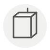

Ragusano ✦
Ragusano
| Nom latin | Ragusano DOP |
|---|---|
| Famille | Laitages & œufs |
| Origine | Plateau ibléen, Sicile |
| Saison | Toute l’année |
| Goût | Végétal · Relevé · Salé · Umami |
| Prix courant | 22–35 €/kg |
Ce que c’est
Il s'est vendu des siècles sous le nom de caciocavallo ragusano, d'après la façon de suspendre les blocs par paires a cavaddu, à cheval sur une perche. Obtenir la DOP en 1996 lui a coûté le mot caciocavallo : un fromage commercé depuis le XIVe siècle a changé de nom pour garder son origine.
En cuisine
Prenez-le affiné au-delà d'un an et râpez-le ; jeune, il reste élastique et devient caoutchouteux à la poêle. Son amertume herbacée demande du sucré en face : tomate longuement cuite, ou oignon rôti.
S’accorde avec
Tomate Huile d’olive Aubergine Oignon Poivre noir Origan Fève Tomate San Marzano
Une erreur ici, ou un oubli ? Dites-le nous